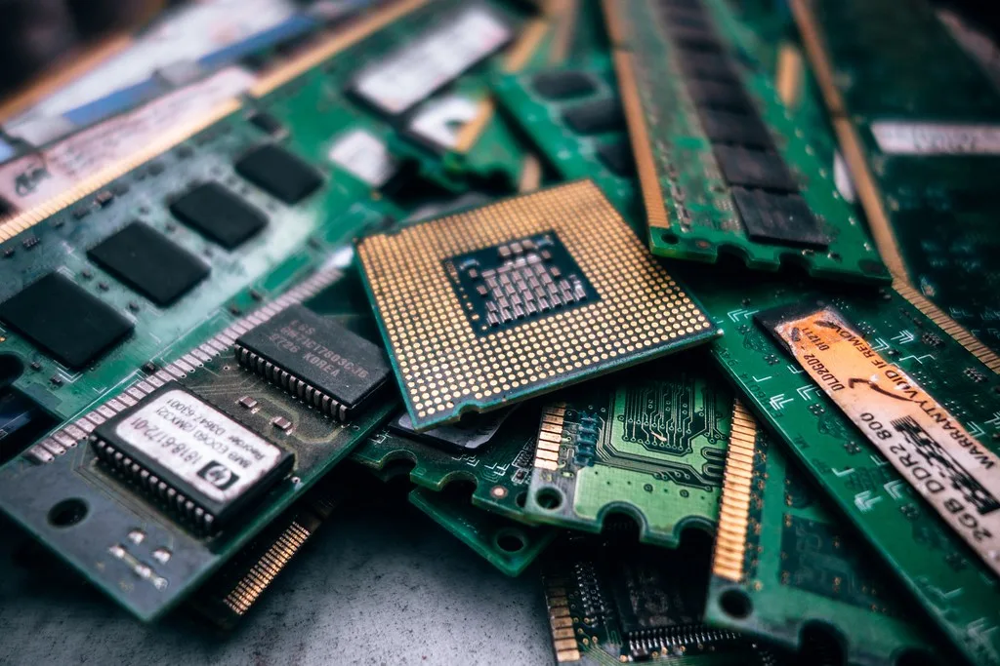

삼성전자 2분기 영업이익 89.4조 '역대 최대'…메모리값 급등 효과
삼성전자가 2026년 2분기 연결 기준 매출 171조원, 영업이익 89.4조원의 잠정 실적을 발표했다. 전 분기 대비 매출은 27.74%, 영업이익은 56.21% 늘었고, 전년 동기와 비교하면 매출은 129.31%, 영업이익은 10배가 훌쩍 넘게 불어난 수치다. 분기 영업이익으로는 역대 최고 기록으로, 반도체 부문의 실적 개선이 전사 실적을 견인한 것으로 분석된다. 삼성전자는 30일 오전 확정 실적 발표와 함께 컨퍼런스콜을 열어 세부 사업부별 성과와 하반기 전망을 설명할 예정이다.
이번 호실적의 배경에는 D램과 낸드플래시 가격의 동반 급등이 자리하고 있다. AI 데이터센터 투자 열풍으로 서버용 메모리 수요가 폭증하면서 범용 D램은 물론 낸드 가격까지 전 분기 대비 큰 폭으로 뛴 것으로 전해진다. 여기에 6세대 고대역폭메모리인 HBM4의 양산과 출하가 본격화되면서 반도체(DS) 부문 영업이익에서 HBM이 차지하는 비중도 눈에 띄게 늘어난 것으로 추정된다. 그동안 HBM 시장에서 SK하이닉스에 다소 뒤처졌던 삼성전자가 HBM4를 기점으로 점유율 격차를 좁혀가고 있다는 평가가 나온다.

메모리 가격 상승은 비단 D램에 그치지 않는다. AI 데이터센터에 들어가는 기업용 SSD(eSSD) 수요까지 폭증하면서 낸드 가격도 전 분기 대비 상당한 상승폭을 기록한 것으로 알려졌다. 업계에서는 메모리 공급 부족 현상이 단기간에 해소되기 어려운 만큼, 하반기에도 가격 강세가 이어질 가능성이 높다고 보고 있다. 이 같은 흐름이 이어질 경우 삼성전자뿐 아니라 SK하이닉스 등 국내 메모리 업체 전반의 실적 개선세도 당분간 지속될 것으로 전망된다.
반도체 외 사업 부문에서도 개선 흐름이 감지된다. 다만 이번 실적의 핵심 동력은 명확히 메모리 반도체였다는 것이 시장의 대체적인 평가다. 증권가에서는 성과급 충당금 등 일회성 비용을 제외하면 실질적인 반도체 부문의 수익성이 시장 예상치를 상회했을 가능성에 주목하고 있다. 이 때문에 이번 컨퍼런스콜에서 발표될 사업부별 세부 수치와 원가 구조에 대한 설명에 투자자들의 관심이 쏠리고 있다. 모바일과 가전 등 세트 사업 부문 역시 프리미엄 제품 판매 확대에 힘입어 견조한 흐름을 이어간 것으로 알려지면서, 반도체 편중 우려를 다소 완화했다는 평가도 나온다.

이날 컨퍼런스콜에서는 HBM4 출하량과 주요 고객사 공급 계획, 7세대 HBM4E 양산 준비 상황 등이 주요 안건으로 다뤄질 것으로 예상된다. 아울러 그간 부진했던 파운드리 사업부의 실적 개선 여부도 관심사다. 애플과 테슬라 등으로부터 대규모 수주를 확보한 미국 테일러 공장이 가동을 앞두고 있어, 파운드리 부문이 하반기 실적에 어떤 영향을 미칠지가 관전 포인트로 꼽힌다.
시장에서는 이번 실적을 계기로 삼성전자에 대한 눈높이가 한층 높아질 것이라는 전망이 나온다. 다만 메모리 가격 강세가 언제까지 지속될지, 그리고 중국 업체들의 저가 물량 공세가 변수로 작용하지는 않을지에 대한 우려도 함께 제기된다. 증권가는 삼성전자의 3분기 실적과 HBM4E 양산 일정이 예정대로 진행되는지를 다음 분수령으로 지목하고 있다. 최근 국내 증시가 반도체발 변동성으로 크게 출렁였던 만큼, 이번 실적 발표가 투자심리 안정에 어떤 영향을 미칠지도 관심사로 떠오르고 있다.